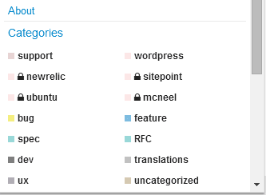
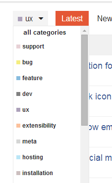
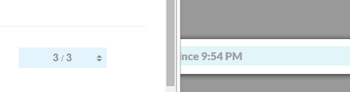
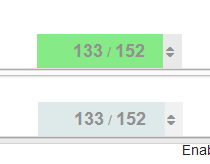
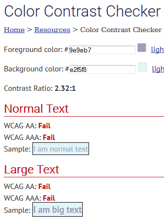
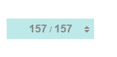
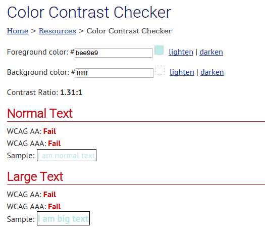
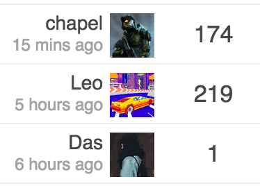
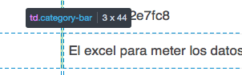

There may be something to giving the OP some “credit” for starting the topic by putting their avatar on the very left and then having on the very right the last participant One end may kind of balance the other.
Sam's Simple Theme
Been playing with my design today:
I really hate our greenish color there, nothing else in the design as that color.
Also I prefer square category style throughout so I added that.


I find the lines a tad disjoint from the category word. Note colors look washed out cause I am suppressing them with opacity.
Updating the first post with the current style.
Progress bar looks too close to white for me here, (it’s blending with white background) can you turn up the saturation a tad?
Also probably destroying the accessibility specs
What I committed for the main theme is VERY close to the scheme slack use and is a factor of tertiary/secondary color, not a weird combo with the success color. Probably best open a new topic on this if you wish.

This is really night and day:

Note: the color is a hint, the numbers communicate the same thing anyway.
Very much day and day for me:
{kind=link}
Ill revert the main theme for now, till @awesomerobot looks at it, but really no idea where there green is coming from. its odd
I’m used to the green, but I’m not a big fan of it.
From
http://webaim.org/resources/contrastchecker/

going with this in my theme for now:

but leaving core alone for now. I can’t be doing these kind of changes so close to release, and @awesomerobot can look at this anyway.
You got the check backwards… the blue is foreground on white.

“Destroying” seems appropriate.
Restraint is good 
HA that is totally unrelated never had those colors
and this sort of passes:
{kind=link}
which at least is not green
Fixed my screenshot, it was still about 1.3.
Also … by the way
{kind=link}
Just sayin’
@Mittineague you will notice I actually improved contrast with my initial change … anyway we can leave this for now
My complaint was about the contrast vs the all-white background of the page, not the fill color vs the text color! The green/blue was the foreground; white was the background.
{kind=link}
@mcwumbly any thoughts on any of my recent changes?
Currently the vertical alignment of the category, the username und the rel. time has some problems.
will see if I can sort that out, getting square badge style right has been really hard for me cc @awesomerobot
I’ve made some more changes.
Left of topic title has category color bar. Our forum has only two main categories (on topic and gaming) so the colors are very helpful, but the name is not as important. I could see adding the category as a column if you had enough to warrant it.
I moved the replies to the far right. One thing I wanted is consistent positioning. Having replies be on the left of the last poster info, meant replies would shift around depending on the length of a users name. It also meant inconsistent whitespace.
I completely removed any of the info that was under the topic title. I prefer the cleaner look, but having everything on a single line except for the last poster looks a bit odd to me. Somewhat of an impasse because I can’t think of something better.
As always, still experimenting. Any feedback is welcome.
I had the same issue. It was there regardless of the square or not. Something to do with the markup of the category badges.
I got to figure out how to fix this … its real tricky but I really love my square style.
I do prefer the square style. Can you add it as one of the options in the category style setting?
Not until I can figure out the CSS 
@sam What do you think of some of the things I’ve done to my variation of your style?
Curious since it wouldn’t have been possible if you hadn’t taken the time to create this first. Wanted to also think you for creating it, and sharing it with us all.
I like the colors you used in your forum and general styling, also appreciate the extra removal of info, though prefer to keep my creator stuff for now.
I feel the reply count is a bit “weak” in color could be a bit stronger.
The bar is an interesting concept but feels a bit loud to me.
Flipping the columns around is fine, I do see that adding a level of balance to the design. I would have to live with it a bit to make a final call.
I am no a huge fan of removing the heading, I did mute them way down on my design.
Completely understand about the creator info, on here I see it being a bit more important.
I’ve found I don’t miss the heading. The only downside is I had to add special styling for the new posts alert. It does mean there is an odd space between the topic list and the top buttons, where as the heading would provide that spacing without feeling odd.
Decided to play with it a bit and tone down the category colors, and use the primary color for the replies.
I also felt the category color on the left was a bit strong. After the changes, they still are easy to recognize, but much less strong.
I would still prefer the existing design which looks neat and clean. This minimal design will take us back to somewhat front-end interface designs of already existing forum platforms.
Default discourse design is best but you can surely propose themes for it
Changing discourse default design to my personal use design is not on the cards
I never use the hamburger category menu, but I do appreciate the consistency with using the square badge design throughout. I prefer it to the default slim-bar, so hopefully you can sort out the alignment issues. I’m glad @chapel did the experiment with the full bar because I’ve always thought that’d be a good way to go. … but after seeing both I like the square better right now.
Toning down the progress bar is a good call. I’m not sure about the particular color. I think it might be better going with a little less blue in it.
I think you have it right with the layout of last poster / replies. Still not a fan of the reversal @chapel did there.
I still feel like the creator / created info is just noise…
Is it that you don’t like avatar on the right of the text or even the replies on the right?
I think what bothers me mainly is the avatar being on the right of the text.
This…
And also - placing “the number” next to the Avatar creates some kind of context between the two that doesn’t really exist:

After looking at it a while, it did always feel off.
Thinking of adding the table header back, as that adds some visual continuity from top down.
That becomes nice now as well.  One suggestion: I think the avatars need a little bit more margin on the right.
One suggestion: I think the avatars need a little bit more margin on the right.
Still playing around with it. I think the last post is good, and adding the header I feel grounds the columns better.
Still torn on the color bar and/or the category column.
Honestly the default meta category bar, or even the square just don’t look great to me. Not sure what to do otherwise though.
Personally I like this version the most. But it’s just me.
So, after all, how do I apply the theme - i.e. where is the final version maintained?
I will post my latest style later today. I’ll put it in a Github gist so that it is easier to track, that and it will have better versioning.
Thanks, and what about Sam’s original theme? Where is the latest version held?
UPD. Tried to apply CSS and SCRIPT from the very first post of this topic, but the topics list and the categories page seem broken:
{kind=link}
{kind=link}
So I had to fix those in mine before it diverged.
You can remove the colspan from main-link.
<td class='main-link clearfix' colspan="{{titleColSpan}}">
into
<td class='main-link clearfix'>
For category page, if you notice in mine, I surrounded all topic list styles with .topic-list:not(.categories) to make sure it didn’t affect the category page.
heads up, we just made some structure changes to categories, @chapel your theme may need some adjustments as is mine
Do you have commits or details on what has changed?
@awesomerobot changing the header category color from $header-primary color to $primary made our categories invisible.  had to put this back manually in customizations for now:
had to put this back manually in customizations for now:
header .title-wrapper .bar .badge-category { color: $header-primary !important; }
Quick update, we rolled this back and @awesomerobot will be revisiting it soon.
ah, yes! I forgot that the header has its own primary/secondary variables
I made some more changes and resubmitted the whole thing, some customizations using the box style of category will have to edit a few lines of CSS, but the structure/organization of category styles is much better.
Thanks to @chapel for sharing his customizations 
Is there a way to isolate the code that make the category bars coloured?

The css part would be something like this:
$color1: #30A92A;
$category-opacity: 0.3;
.category-bar {
margin: 0 !important;
padding: 0 !important;
width: 2px;
.category-meta & {
background-color: rgba($color1, $category-opacity);
}
}
…but i tried different combinations on the header part and i can’t get this to work…
Not sure what you mean?
I just updated my theme to allow for the structure changes made when we added the bullet category style, it also made CSS smaller.
Cool. I’ll take a look and see if any of it will fit with my work.
I had already done quite a bit of changes, so I’m thinking we need to figure out the future of custom themes and how they can be consumed/managed.
How much interest is there in supporting something in core for this, including a way to keep them up to date? It could work as a plugin now that most of the plugin hooks exist to create it.